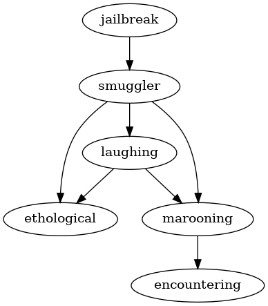

Deckard is special. Not only did take Systems Programming for fun1 as an ACMS major, he also likes to install esoteric operating systems on his Librem 132. Tired of running mainstream Linux operating systems and actually having his hardware work, he has decided to try out a BSD, one of the original free and open source Unix operating systems.
Things were going well... until he tried to build software not supported
by the primitive package manager on his BSD system. In particular,
Deckard wants to install jailbreak, which is a rootkit that escapes the
hallowed jails on FreeBSD.
Unfortunately, the program has a number of dependencies that must be
compiled and installed before he can even build jailbreak. For example,
given the following MANIFEST.json:
{
"jailbreak": ["smuggler"],
"chroot": ["smuggler","laughing","marooning"],
"leftpad": ["smuggler"],
"sudo": ["marooning","ethological","laughing"],
"figlet": ["ethological"],
"cmatrix": ["laughing","marooning"],
"cowsay": ["smuggler"],
"smuggler": ["laughing","ethological","marooning"],
"laughing": ["ethological","marooning"],
"marooning": ["encountering"],
"ethological": [],
"encountering": []
}
After parsing this input and generating the dependency graph on the right,
it is clear that jailbreak requires 5 packages (ie. smuggler, laughing,
ethological, marooning, and encountering) to be built beforehand.
Moreover, looking at the graph it is also clear that package manager can
build at most 2 packages concurrently (remember that packages can only be
built if all their dependencies have been met).
Determining the number of dependencies for the jailbreak package and the
maximum concurrency for building the packages is a daunting task for an
ACMS major. He asks that the "big-brained" CSE majors help him out
by parsing a set of package dependencies and outputting the number of
dependencies and the maximum concurrency.
You will be given a series of package manifests in the following format:
N # Number of packages
Package Dependencies
Package Dependencies
...
That is, you are first given the number of packages (N)followed by the
name of thepackageand a list of itsdependencies` (separated by
white-space).
Here is an example of the input based on the MANIFEST.json above:
12
jailbreak smuggler
chroot smuggler laughing marooning
leftpad smuggler
sudo marooning ethological laughing
figlet ethological
cmatrix laughing marooning
cowsay smuggler
smuggler laughing ethological marooning
laughing ethological marooning
marooning encountering
ethological
encountering
For each package manifest, you are to output two things:
jailbreak
program. 2. The maximum concurrency the build system can exploit in
building the dependencies.Here is an example output for the package list above:
Number of Dependencies: 5
Maximum Concurrency: 2
For each input test case, your solution should have the following targets:
| Time Complexity | O(V+E), where V is the number of packages and E is the number of dependencies in DAG. |
| Space Complexity | O(V), where V is the number of packages. |
Your solution may be below the targets, but it should not exceed them.
To submit your work, follow the same procedure you used for [Reading 01]:
$ cd path/to/cse-30872-fa22-assignments # Go to assignments repository
$ git checkout master # Make sure we are on master
$ git pull --rebase # Pull any changes from GitHub
$ git checkout -b challenge18 # Create and checkout challenge18 branch
$ $EDITOR challenge18/program.cpp # Edit your code
$ git add challenge18/program.cpp # Stage your changes
$ git commit -m "challenge18: done" # Commit your changes
$ git push -u origin challenge18 # Send changes to GitHub
To check your code, you can use the .scripts/check.py script or curl:
$ .scripts/check.py
Checking challenge18 program.cpp ...
Result Success
Time 0.06
Score 6.00 / 6.00
$ curl -F source=@challenge18/program.cpp https://dredd.h4x0r.space/code/cse-30872-fa22/challenge18
{"result": "Success", "score": 6, "time": 0.06185953369140625, "value": 6, "status": 0}
Once you have committed your work and pushed it to GitHub, remember to create a pull request and assign it to the appropriate teaching assistant from the Reading 09 TA List.